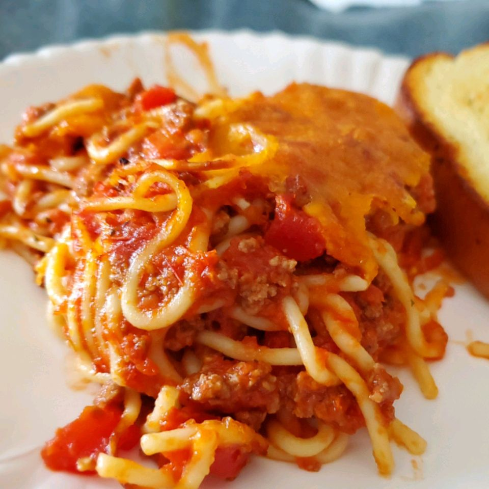

Spaghetti-meatsauce

Home
Spaghetti and meatsauce dish
Showcase of the simple dish made with spaghetti and a meatsauce. It is simple and cheap to make
making it valuable stable dish to have in your repertoire as you can add multiple things later on
as you perfect the dish
Ingredients
- Spaghetti
- Ground beef
- Tomato sauce
- Onions
- Garlic
- Spices
- Cheese (optional)
Steps
- Boil water in a pot
- Put spaghetti in the pot
- Chop onions and garlic
- Put ground beef in a pan and cook it
- Put onions and garlic in the pan
- Put tomato sauce in the pan
- Put spices in the pan
- Let it simmer until ready
- Put the spaghetti and meatsauce on a plate
- Put cheese on top (optional)